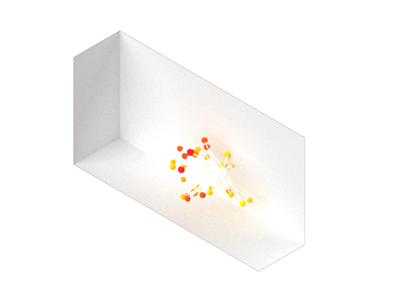

|
Space-Sentiment Paradigm -A Data-driven Framework for Spatial Projection of Emotional Data- Yubo Zhao
Final project for the MIT class
4.550/4.570
Computation Design Lab |
|
|  |
Emotional Data Projected in Virtual Space Illustration by Yubo Zhao |
Project OverviewVirtual reality has been used as an efficient tool for iterating and improving spatial design in both real world and its digital twin, yet many measurements of psychological effectiveness in design remain qualitative and irrelevant to specificity of spatial factors. The sentimental feedback of users in a designed space is one of those which lacks direct correlation between emotional and spatial data. For creating more sentimentally impactful and resonating spatial design, a quantitative and space-focused analysis is important to unveil this relationship. Therefore, in this final project, a spatial and sentimental data-driven framework will be introduced to analyze how architectural design factors are spatially tied with emotional state. |
||

|
Fig 1. Research Motivation and Hypothesis Psychological reactions and feedbacks in an architectural space are often measured through qualitative and general methods, such as sending questionnaires for feelings about a hallway design, or tracking eye movements on a 2D screen that demonstrates an intersection within a building. This project, in another hand, seeks for a space-relevant, space-specific framework that ties emotional states with spatial factors through an immersive and realistic method of measurement, and subsequently hypothesizes that when proceeding a spatial exploration, certain psychological nuances associated with behavioral and spatial features can be discovered and analyzed. |

|
Fig 2. Method - Design The experiment provides six different spatial scenarios that vary in scale and proportion, but have same neutralized lighting and material settings in order to isolate the variables of interest. Participant will experience these six ceiling-less white enclosures within a bounded moveable area of 1.5m, located in the center of each space, which also makes the ability of movement unbiased. |

|
Fig 3. Method - Design The experiment provides six different spatial scenarios that vary in scale and proportion, but have same neutralized lighting and material settings in order to isolate the variables of interest. Participant will experience these six ceiling-less white enclosures within a bounded moveable area of 1.5m, located in the center of each space, which also makes the ability of movement unbiased. |

|
Fig 4. Method – Participants and Apparatus The experiment is aim to have participants with varying gender, age, and design backgrounds, but only four participants are recruited for this project due to a constrained timeframe. Oculus Quest 2 VR headset is used for the virtual experience, and MUSE 2 headband is used for EEG data collection. |

|
Fig 5. Method - Procedure Participants will involve in the experiment in two ways: a self-reporting questionnaire that qualitatively measures their emotional state before and after the spatial experience and enables them to pick a personally preferred option, and a virtual journey that sequentially leads them through six enclosures with a transitional scene in between two spaces in order to counter-balancing the psychological impact of spatial shift. |

|
Fig 6. Method – Questionnaire Questionnaire asks standard self-reporting questions such as current and post-VR feelings, with the additional selection of participants’ favorite space. |

|
Fig 7. Method - Tech Architecture The EEG data is synced with the head position of participants via a customized script and records every second. The output CSV file is sent to Grasshopper to be parsed with a customized code and visualized and rendered in Rhino 7. |

|
Fig 8. Method – Brainwave Selection While brainwaves with five different frequencies are commonly used for decoding emotional states, two of them (Beta and Theta) are selected with a focus on the concentration level and arousal level. |

|
Fig 9. Method – EEG&VR Integration EEG data is synced with the head position and view direction of participants through a customized script, which can be seen in this demo. |

|
Fig 10. Results - Emotional Data of Four Participants Projected in Space |

|
Fig 11. Results - Emotional Data of Four Participants Projected in Space |

|
Fig 12. Results - Emotional Data of Four Participants Projected in Space |

|
Fig 13. Results - Emotional Data of Four Participants Projected in Space |

|
Fig 14. Results – Beta Brainwave in 6 Scenarios This graph demonstrates varying intensities of beta brainwaves that roughly shows the small square room causes the highest level of stress. |

|
Fig 15. Conclusion 1 – Emotional Perspective Proportion matters. Elongated layout tends to calm people more effectively. |

|
Fig 16. Conclusion 1 – Emotional Perspective The importance of scale is a bit vague, yet generally speaking, participants in large rooms slightly lose (active) concentration. |

|
Fig 17. Conclusion 3 – Emotional Perspective |

|
Fig 18. Conclusion 4 – Behavioral Perspective |

|
Fig 19. Conclusion 5 – Subjective Perspective |
|
Future Steps
1. Improve the statistical validity and collect more data from a larger pool of participants.
|
|
References
Evans, Gary W. “Environmental Cognition.” Psychological Bulletin 88, no. 2 (19800101): 259. https://doi.org/10.1037/0033-2909.88.2.259.
|
2013 All rights reserved. Last modified: Jan. 30, 2014 by TN